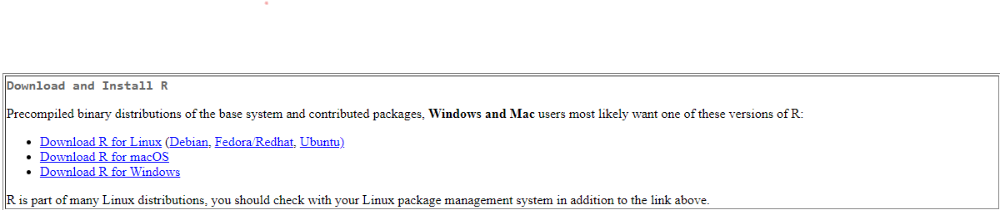
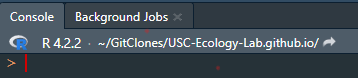

# comments are written on lines starting with hastags. These will appear different.
# Comments can also be written after code
2+2 == 4 # running this line will return TRUEProgramming in Ecology
Background
Broadly speaking, ecology is a field focused studying organisms and how they interact with others and their surroundings. This often involves identifying, describing, and hypothesizing about ecological patterns. In the pursuit of studying such patterns, ecologists in the modern world utilize a vast array of tools to collect and analyze data. Ecological data spans a wide range of formats and sampling distributions. As ecologists, we must be able to properly interrogate our data so that we can identify meaningful trends. That is where the application of statistics comes into the picture. Simply collecting data and making general conclusions cannot inform thorough conclusions. Analyzing data through the proper application of statistical tests will help us as scientists.
With the advancement of technology and statistical computing, ecological data analysis has progressed beyond the point of simple calculations. The large amounts of data acquired in ecology require us to be proficient programmers and statisticians. Luckily, there are several, free tools which are growing in popularity for people to use, making data analysis extreme accessible. Arguably the most common tool used in ecology, academia, and data science is R. R is an open-source programming environment and language. R was developed primarily by statisticians which makes it extreme versatile. Additionally, because so many ecologists use it, there are many add-ons (called packages) which are taylor-made for ecological applications.
In this course, I will provide examples and support for processing lab data in R. The goal is that someone who has never used R will be able to still be successful. This means at times I may over-explain somethings. Alternatively, it is difficult to remember what it was like to first learn something, so if I am not explaining anything well, please come ask me! Finally, when it comes to completing your assignments, I don’t care what software you use to get it done. For example, if you have to make a bar graph, you might know how to complete something quicker in excel than in R. So, go ahead and use what is most comfortable. However, time invested in learning R will only better equip you to expand your skills.
A note about the internet
Google, chatGPT, and Stack Overflow are all extremely useful resources for solving any issues you may encounter while working with R. Often times if you get an error, simply copy and paste it in a search and there’s likely someone else who experienced a similar issue. This is a fundamental piece of the process. Working with R (or any programming language) is a rarely a smooth process. Don’t be dissuaded by needing to search and solve issues. It’s all just part of the game.
Setting up R
Setting up R on your computer is the first barrier and possible source of frustration. We don’t need to worry too much about the technical background of R to be able to utilize it for our purposes. However, I do want to provide some brief background on terminology which can help us understand what is actually going on when we use R. R is a language where we can instruct the computer to preform actions. R as a language is very beginner friendly because it is an interpreted language. This means that you can directly enter code into the “console” and it will provide immediate results. So when using R, you can write directly to the console or in a script then enter that into the console. R scripts are just text files (like a simple word document). While you’re beginning it can be useful to directly write into the console. However, once you write more complicated programs, a script is useful.
The basic R interface is not very intuitive. Instead, we can use the RStudio IDE (integrated development environment). This is a free product which helps organize projects and communicating with R.
Downloading R studio & R
Go to the posit website at https://posit.co/download/rstudio-desktop/. This website has instruction for downloading both R and RStudio.
When downloading R, select the right one for your computer at the top panel. If on the initial installation it asks you to select a mirror, it doesn’t matter. Just select whatever.
Once you have both R and Rstudio downloaded, you can just open Rstudio.
Some basics of working in R
RStudio Layout
When you first open RStudio, there will be three main tabs, the largest of which is the console. On the right are two windows with multiple tabs. The preselected tab on the bottom is a file browser and the one of top shows what is active in your R environment. At the start this is empty but as you create variables or functions they are visible in this window.
My setup is a bit different but you can see a good orientation at this website.
Understanding R code
There are several great resources for learning R in detail which I’ll link at the bottom. Very briefly, I want people to understand some very basic items:
Comments are great for understanding code. You should include it for your future self to refer back to. I will include comments in all our class code.
We can assign values to objects using an “assignment operator”. Traditionally, in R this is an arrow <-. You can also use an equal sign =. I prefer the arrow for a number of reasons but it is also intuitive. You take all the values on the left and put them into the storage variable on the left.
x <- 5 # take 5 and put it into x
y = 5 # take 5 and put it into y
print(x == y) # will print TRUE
z <- x * y # take the product of x and y and put it into z
print(z) # print zFinally, functions are operations which can be preformed on values/objects. Functions are executed by feeding arguments into a call. This generally looks like function(arg1, arg2, ...). This is very similar to excel where you would write =function(arg1, arg2) in a cell.
Note in the examples above, print is a function. You can learn more about any function through the documentation. Simply write into the r console ?function. where the function is listed.
?printFunctions can also be wrapped around one another and are preformed inside-out. Standard order of operations. For example:
# c() is a function short for concatenate or combine. it chains together values
c(5,5,3,4)
# the mean function takes the mean of a range of values.
# so you could do this two ways:
# option 1:
x <- c(5,5,3,4)
mean(x)
# option 2:
mean(c(5,5,3,4))A unique aspect of R, which has recently been added to the base functionality
This is an extremely simplistic overview. I encourage everyone to look at some of the additional resources for help with learning R.
Organizing your computer files & importing to R
Many people do not maintain a clear organization of files in their computer’s storage. This problem is compounded by .
A common problem that many students using the university’s office licence run into is that their word/excel documents are saved into their University cloud storage (onedrive). Then it can be tricky to find those files through a programming approach. If you have a good file organization system, please keep to it and you should be fine. However, if you haven’t put much thought into organizing your files, I encourage you to create a new folder for this course. You can store all your files in that folder. Then when trying to work with R, you can load your files from that path.
So let’s talk about file paths. In windows, you can use the file explorer to look up files. Then you can access the path by clicking on the top bar. Typically, it will look something like this: ‘C:\Users\yourname\Documents\EcologyLab’. In Mac, it will look a little different. Notably, the slashes will be front-slash instead of back-slash. If you try to read a file from R, mac users can just copy-paste their file paths. However, windows users need to write it out with a front-slash. Alternatively, you can use double-backslashes but this is a bad habit to develop.
If you want to be an advanced R user, you should learn about organizing your files in a package format and taking advantage of RStudio’s project feature. You should also use relative file paths and set-up projects using git. However, this is beyond the scope of the course and likely most applications for ecology projects.
Read more about file organization in the additional resources page.
Reading in files
The most common US-based data format is a comma separated value file (*.csv). However, most people are more familiar with working in excel which has its own file format (.xlsx or .xls). There are several R packages to help you read in excel files. But for the sake of keeping things simple this course, we will stick to .csv files.
You can save any excel file as a .csv. Just make sure you keep your headers simple.
To read in a file, you can call read.csv(). This is where file paths become important. In R, you have a working directory. This is where R is currently looking for files. You can look at your working directory with the function getwd(). Also RStudio displays the working directory at the top of the console window. Note that the tilde (~) often will refer to your Documents folder. At least for Windows machines.

You can change your working directory with setwd(). You simply put the file path to the folder where you want to access data from.
In short, loading files might look like this:
my_path <- '~/BIOL570L Docs' #replace this with your path file
setwd(my_path) #reassign working directory. This is only necessary if not already there
my_data <- read.csv('mydata.csv') #load data
#altarntively
my_data <- read.csv('~/BIOL570L Docs/mydata.csv')Packages
A great benefit of R is that there are user-made packages which contain functions and data for particular purposes. Most functions I’ve used in this example are ‘base’ R, meaning they exist by default. Other functions can be loaded by packages. To keep R simple, most packages are not loaded by default. To load a package, you must first install it. Luckily, R does a great job maintaining all packages in R, through the Comprehensive R Archive Network (CRAN). So you can download CRAN packages directly though R.
To install a package, you can use the install.packages() function.
# we will use ggplot2 in our first assingment so you'll need to download it.
install.packages("ggplot2")Then each time you need to utilize a package in an R script, you will need to load the package. Typically this is done at the top of a script. You can load a package with the library() function.
library(ggplot2)Note that when installing we use quotes and when loading we don’t. It’s tricky that way. You should only need to install a package once unless you need to update it. Often times beginners in R get stuck on trying to use functions they haven’t loaded. So make sure you called library() if you get an error about not finding a function.